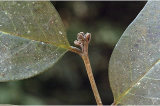
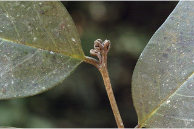
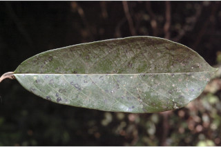
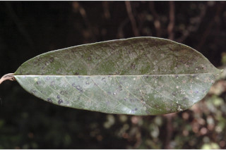
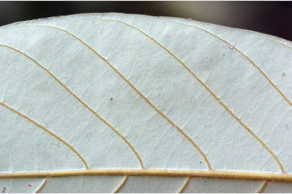
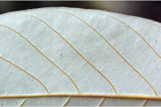

Trees up to 25 m tall.
25 ಮೀ.ವರೆವಿಗೆ ಬೆಳೆಯುವ ಮರಗಳು.
25 മീറ്റര് വരെ ഉയരമുളള മരങ്ങള്.
மரங்கள் 25 மீ. உயரம் வரை வளரக்கூடியது
Bark light brown, lenticellate.
ತೊಗಟೆ ತೆಳು ಕಂದು ಬಣ್ಣದಲ್ಲಿದ್ದು ವಾಯು ವಿನಿಮಯ ಬೆಂಡು ರಂಧ್ರಗಳನ್ನು ಹೊಂದಿರುತ್ತದೆ.
ശ്വസനരന്ധ്രങ്ങളുളള, ഇളം തവിട്ട് നിറത്തിലുളള പുറംതൊലി.
மரத்தின் பட்டை வெளிறிய ப்ரவுன் நிறமானது, லெண்டிசெல் கொண்டது.
Branchlets terete, subglabrous.
ಕಿರುಕೊಂಬೆಗಳು ದುಂಡಾಗಿದ್ದು ಉಪ-ರೋಮರಹಿತವಾಗಿರುತ್ತವೆ.
ഉപഅരോമിലമായ, ഉരുണ്ട ഉപശാഖകള്.
சிறிய நுனிக்கிளைகள் குறுக்குவெட்டுத் தோற்றத்தில் வளையமானது, சிறு உரோமங்களுடையவை.
Leaves simple, alternate, distichous; petiole 0.8-1.5 cm long, canaliculate above, subglabrous; lamina 8-25 x 3-11 cm, oblong sometimes elliptic-oblong, apex shortly acuminate with blunt tip, base rounded or acute, margin entire, coriaceous, glabrous, glaucous beneath; midrib canaliculate above; secondary_nerves 7-13 pairs, prominent, nearly parallel to margin; tertiary_nerves distantly percurrent, slender; higher order nerves finely reticulate.
ಎಲೆಗಳು ಸರಳವಾಗಿದ್ದು ಪರ್ಯಾಯ ಜೋಡನಾ ವ್ಯವಸ್ಥೆಯಲ್ಲಿರುತ್ತವೆ ಹಾಗೂ ಎಲೆಗಳು ಕಾಂಡದ ಎರಡೂ ಕಡೆ ಎದುರು ಬದರಿನ ಲಂಬ ಸಾಲಿನಲ್ಲಿರುತ್ತವೆ;ತೊಟ್ಟುಗಳು 0.8-1.5 ಸೆಂ.ಮೀ. ಉದ್ದವಿರುತ್ತದೆ ಮತ್ತು ಮೇಲ್ಭಾಗದಲ್ಲಿ ಕಾಲುವೆಗೆರೆಯನ್ನು ಹೊಂದಿರುತ್ತವೆ ಹಾಗೂ ಉಪ-ರೋಮರಹಿತವಾಗಿರುತ್ತವೆ; ಪತ್ರಗಳು 8-25 X3-11 ಸೆಂ.ಮೀ.ವರೆಗಿನ ಗಾತ್ರ ಹೊಂದಿದ್ದುಚತುರಸ್ರ ಕೆಲವು ವೇಳೆ ಅಂಡವೃತ್ತ-ಚತುರಸ್ರದ ಆಕಾರ ಹೊಂದಿದ್ದು ಮೊಂಡಾದ ಅಗ್ರವುಳ್ಳ ಕಿರಿದಾದ, ಕ್ರಮೇಣ ಚೂಪಾಗುವ ತುದಿ, ದುಂಡಾದುದರಿಂದ ಚೂಪಾದ ಬುಡವನ್ನು ಹೊಂದಿರುತ್ತವೆ.;ಅಂಚು ನಯವಾಗಿರುತ್ತದೆ; ಮೇಲ್ಮೈ ತೊಗಲನ್ನೋಲುವ ಮಾದರಿಯಲ್ಲಿರುತ್ತವೆ ಮತ್ತು ರೋಮರಹಿತವಾಗಿರುತ್ತದೆ; ಪತ್ರದ ತಳಭಾಗ ಮಾಸಲು ಬೂದು ಹಸಿರು ಬಣ್ಣ ಹೊಂದಿರುತ್ತದೆ;ಮಧ್ಯ ನಾಳ ಪತ್ರದ ಮೇಲ್ಭಾಗದಲ್ಲಿ ಕಾಲುವೆಗೆರೆ ಸಮೇತವಿರುತ್ತದೆ;ಎರಡನೇ ದರ್ಜೆಯ ನಾಳಗಳು 7-13 ಪ್ರಮುಖವಾದ ಜೋಡಿಗಳಿರುತ್ತವೆ ಮತ್ತು ಅಂಚಿಗೆ ಸಮಾಂತರವಾಗಿರುತ್ತವೆ; ಮೂರನೇ ದರ್ಜೆಯ ನಾಳಗಳು ಹೆಚ್ಚಿನ ಅಂತರ ಹೊಂದಿದ್ದು ಎಲೆ ದಿಂಡಿಗೆ ಅಡ್ಡವಾಗಿ ಕೂಡುತ್ತವೆ ಮತ್ತು ತೆಳುವಾಗಿರುತ್ತವೆ;ಉನ್ನತ ದರ್ಜೆಯ ನಾಳಗಳು ಸೂಕ್ಷ್ಮವಾದ ಜಾಲಬಂಧ ನಾಳ ವಿನ್ಯಾಸದಲ್ಲಿರುತ್ತವೆ.
ലഘുവായ ഇലകള്, ഏകാന്തരക്രമത്തില്, തണ്ടിന്റെ രണ്ടുഭാഗത്ത് മാത്രമായടുക്കിയതാണ്; മുകളില് ചാലുളള, ഉപഅരോമിലമായ ഇലഞെട്ടിന് 0.8 സെ.മീ തൊട്ട് 1.5 സെ.മീ വരെ നീളം; പത്രഫലകത്തിന് 8 സെ.മീ മുതല് 25 സെ.മീ വരെ നീളവും 3 സെ.മീ മുതല് 11 സെ.മീ വരെ വീതിയും, ആയതാകാരവുമാണ്, ചിലപ്പോള് ദീര്ഘവൃത്തീയ ആയതാകാരം, പത്രാഗ്രം മുനപ്പില്ലാത്ത ചെറുദീര്ഘാഗ്രമാണ്, പത്രാധാരം വൃത്താകാരമോ നിശിതമോ ആണ്, അരികുകള് അവിഭജിതം, ചര്മ്മില പ്രകൃതം, അരോമിലമാണ്, കീഴെ നീലരാശി കലര്ന്നതാണ്; മുകളില് ചാലുളള മുഖ്യസിര; അരികുകള്ക്ക് ഏതാണ്ട് സമാന്തരമായി പോകുന്ന, പ്രബലമായ 7 മുതല് 13 വരെ ജോഡി ദ്വിതീയ ഞരമ്പുകള്; വിദൂര-പെര്കറന്റ് വിധത്തിലുളള നേര്ത്ത ത്രിതീയ ഞരമ്പുകള്; മറ്റ് ചെറു ഞരമ്പുകള് സൂക്ഷമജാലിതമാണ്.
இலைகள் தனித்தவை, மாற்றுஅடுக்கமானவை, இருநெடுக்கு வரிசையிலையடுக்கம் (டைஸ்டிக்கஸ்); இலைக்காம்பு 0.8-1.5 செ.மீ. நீளமானது, குறுக்குவெட்டுத் தோற்றத்தில் கேனாலிகுலேட், சிறு உரோமங்களுடையது; இலை அலகு 8-25 X 3-11 செ.மீ., நீள்சதுர வடிவானது, சிலசமயங்களில் நீள்வட்டம்-நீள்சதுர வடிவானது, அலகின் நுனி சிறிய அதிக்கூரியது மற்றும் அதன் முனை மொட்டையானது, அலகின் தளம் வட்டமானது அல்லது கூரியது, அலகின் விளிம்பு முழுமையானது, கோரியேசியஸ், உரோமங்களற்றது, அலகின் கீழ்பரப்பு மெழுகு பூசியது போன்றது அல்லது சாம்பல் கலந்த நீல நிறமானது (க்களாக்கஸ்); மையநரம்பு மேற்பரப்பில் அலகின் பரப்பைவிட பள்ளமானது; இரண்டாம் நிலை நரம்புகள் 7-13 ஜோடிகள், தெளிவானது, விளிம்பை நோக்கியவாறு காணப்படுபவை; மூன்றாம் நிலை நரம்புகள் அகன்ற பெர்க்கரண்ட், மெல்லியது; மற்ற நரம்புகள் நெருக்கமான வலைப்பின்னல் போன்றது.
Flowers in axillary or terminal lax panicle.
ಹೂಗಳು ಅಕ್ಷಾಕಂಕುಳಿನಲ್ಲಿನ ಅಥವಾ ತುದಿಯಲ್ಲಿನ ಸಡಿಲವಾದ ಪುನರಾವೃತ್ತಿಯಾಗಿ ಕವಲೊಡೆಯುವ ಪುಷ್ಪಮಂಜರಿಯಲ್ಲಿರುತ್ತವೆ.
പൂക്കള് കക്ഷീയമോ ഉച്ഛസ്ഥമോ ആയ ആയഞ്ഞ റസീം പാനിക്കിളുകളാണ്.
மலர்கள் இலைக்கோணங்களில் அல்லது தண்டின் நுனியிலுள்ள பேனிக்கிள், மலர்கள் நெருக்கமற்றவை.
Drupaceous, globose, smooth, 1.5 cm across; seed 1.
ಬೆರ್ರಿ ಗೋಳಾಕಾರದಲ್ಲಿದ್ದು1.5 ಸೆಂ.ಮೀ. ಅಡ್ಡಗಳತೆ ಹೊಂದಿದ್ದು ನಯವಾಗಿರುತ್ತದೆ ಮತ್ತು ಒಂದು ಬೀಜವನ್ನು ಒಳಗೊಂಡಿರುತ್ತದೆ.
ഒറ്റ വിത്തുളള കായ, 1.5 സെ.മീ കുറുകേയുളള, മിനുസമായ ഗോളാകാര ഡ്രൂപ്പ് ആണ്.
உள்ளோட்டுத்தசைகனி (ட்ரூப்) போன்றவை, கோளவடிவானது, வழுவழுப்பானது, 1.5 செ.மீ. குறுக்களவுடையது; விதை ஒன்றுடையது.
 

 

 
